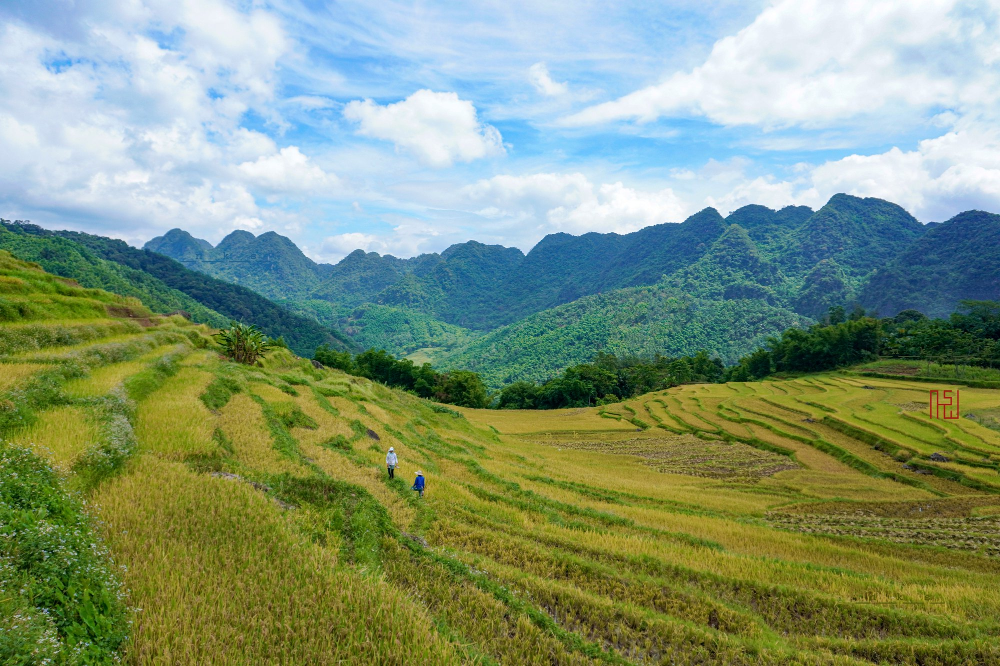

Khu bảo tồn thiên nhiên Pù Luông (Thanh Hoá) — ruộng bậc thang, rừng nhiệt đới, điểm đến liên vùng trên cung tour dài ngày Mường Cốc.
Pu Luong Nature Reserve (Thanh Hoa) — terraced fields and tropical forest, a regional stop on Muong Coc's multi-day route.
La réserve naturelle de Pù Luông (Thanh Hoá) — rizières en terrasses, forêts tropicales, une destination interrégionale sur les circuits de plusieurs jours de Mường Cốc.